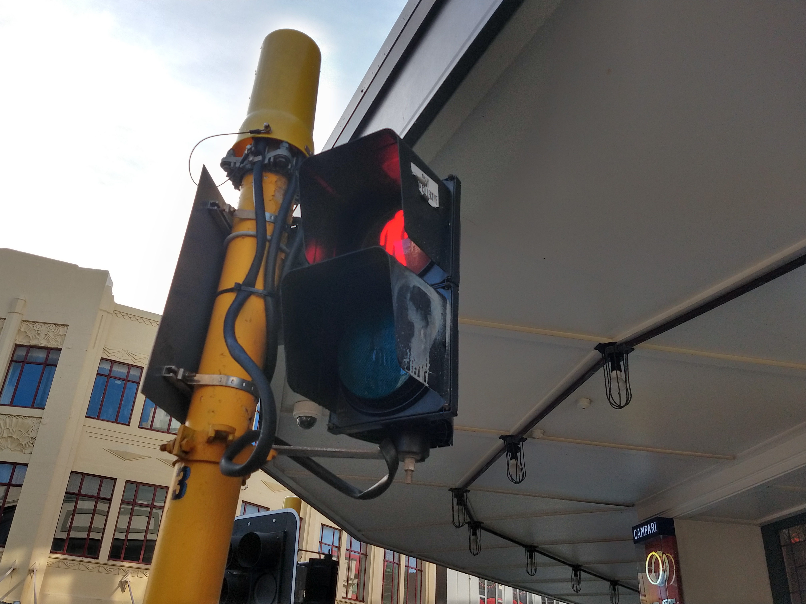

TRAFFIC LIGHT EXAMPLES

Road Traffic Light
These are large in number and are located at various points of the road. They serve as a way to direct and control the flow of car traffic.
At Intersections, you'll generally find about four at each crossing point.

Pedestrian Traffic Light
At areas where traffic is quite high, such as the city streets, these pedestrian lights serve as a way to halt traffic coming from one way to allow pedestrians to cross.
Typically these are here to not continuously halt traffic and allows for order in the road and balance in flow between vehicles and pedestrians.
External Links
These sites can help you learn more about this network in more detail.
http://howimportant.com/importance-of-traffic-light-control-systems/